moveEZ
moveEZ.RmdOverview
moveEZ extends the biplotEZ package (Lubbe et al. 2024)
to animate PCA biplots across the ordered levels of a categorical
variable, referred to throughout as the time variable.
Rather than producing a separate static biplot per level, which
fragments sequential information and makes gradual structural change
difficult to perceive, moveEZ renders transitions between
levels as a continuous animation.
The package provides three animation functions of increasing methodological complexity:
-
moveplot(): animates sample positions against fixed variable vectors, computed once on the full dataset. -
moveplot2(): animates both sample positions and variable vectors, computed separately per time slice, with optional manual alignment. -
moveplot3(): extendsmoveplot2()with automated alignment via Generalised Procrustes Analysis (GPA) (Gower and Dijksterhuis 2004).
All three functions support both animated output
(move = TRUE) and static faceted output
(move = FALSE), the latter being useful for publication
figures or detailed inspection of individual time slices.
For a full methodological treatment, including the theoretical motivation for each framework and a discussion of sign indeterminacy in sequential PCA, refer to the accompanying paper.
Data
Throughout this vignette we use the Africa_climate
dataset included in moveEZ. This dataset contains climate
measurements for ten African regions derived from the ERA5 reanalysis
(Hersbach et al. 2023), with IPCC-defined
reference regions (Iturbide et al. 2020)
as the grouping variable. Measurements span from 1950 to 2020 in
ten-year increments, with twelve monthly observations per region per
year. The six continuous variables are described below:
| Variable | Unit | Description |
|---|---|---|
| Accumulated Precipitation (AP) | m/day | Total daily precipitation |
| Daily Evaporation (DE) | m/day | Net daily evaporation |
| Temperature (Temp) | °C | Mean daily surface temperature |
| Soil Moisture (SM) | m³/m³ | Volumetric water content of upper soil layer |
| Standardised Precipitation Index (SPI6) | Dimensionless | 6-month precipitation anomaly index |
| Wind Speed (Wind) | m/s | Mean daily wind speed at 10m |
data("Africa_climate")
tibble::tibble(Africa_climate)
#> # A tibble: 960 × 9
#> Year Month Region AccPrec DailyEva Temp SoilMois SPI6 wind
#> <fct> <fct> <fct> <dbl> <dbl> <dbl> <dbl> <dbl> <dbl>
#> 1 1950 January ARP 0.177 0.0316 14.8 2.75 1.62 4.07
#> 2 1950 February ARP 0.208 -0.0249 15.4 2.22 1.32 4.24
#> 3 1950 March ARP 0.306 0.0122 20.9 2.08 0.987 4.04
#> 4 1950 April ARP 0.196 0.00396 24.8 1.73 0.916 3.72
#> 5 1950 May ARP 0.590 -0.0448 28.4 2.47 0.691 3.91
#> 6 1950 June ARP 0.32 -0.00754 30.4 1.17 0.249 4.40
#> 7 1950 July ARP 1.33 0.00184 30.8 2.00 0.673 4.93
#> 8 1950 August ARP 1.82 -0.00944 30.5 2.67 0.937 4.45
#> 9 1950 September ARP 0.706 -0.0107 29.7 1.98 1.22 3.67
#> 10 1950 October ARP 0.102 -0.0259 25.9 0.976 1.65 3.18
#> # ℹ 950 more rowsAll examples in this vignette use a PCA biplot constructed on the
full Africa_climate dataset as the base object, passed to
each moveplot function via the pipe operator:
bp <- biplot(Africa_climate, scaled = TRUE) |>
PCA(group.aes = Africa_climate$Region) |>
samples(opacity = 0.8, col = scales::hue_pal()(10)) |>
plot()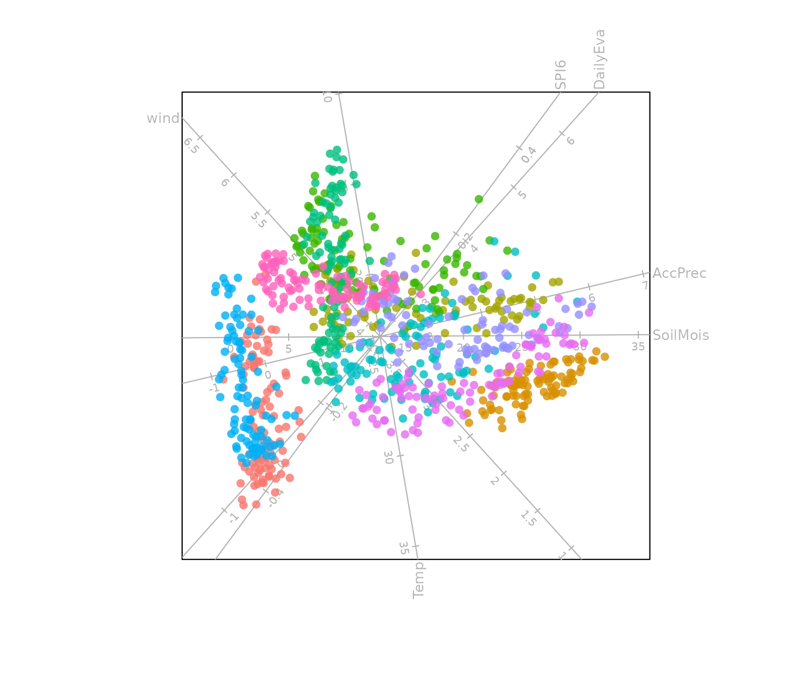
Fixed Variable Frame: moveplot()
moveplot() computes a single PCA decomposition on the
full dataset. The variable vectors remain fixed throughout the
animation, providing a stable reference frame. Only the sample
positions, sliced according to the levels of the time variable, are
animated sequentially. This approach is most appropriate when the
underlying variance–covariance structure can be assumed stable across
time, and is the only viable option when there is a single observation
per group per time level.
The key arguments are:
-
time.var: the name of the ordered categorical variable defining the sequential structure (e.g."Year"). -
group.var: the name of the grouping variable, used for colour-coding (e.g."Region"). -
hulls: logical; whenTRUEconvex hulls summarise group spread at each time level; whenFALSEindividual sample points are displayed. Hulls require at least three observations per group per time level — if fewer exist, points are plotted automatically. -
move: logical;TRUEproduces an animation,FALSEproduces a static faceted display. -
shadow: logical; available only whenhulls = FALSE. WhenTRUE, faded traces of previous sample positions are retained in the animation, conveying the direction and speed of movement across time. -
scale.var: numeric multiplier applied to variable vectors to improve visibility.
Static faceted display
bp |> moveplot(time.var = "Year", group.var = "Region",
hulls = TRUE, move = FALSE)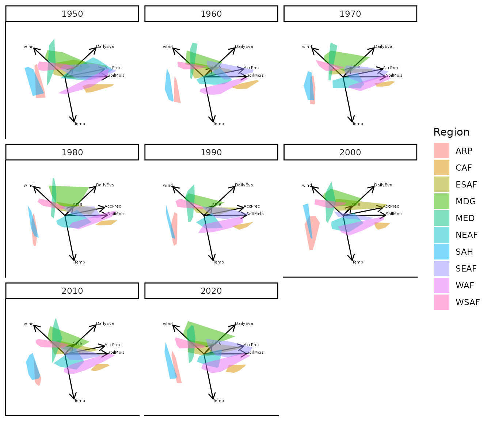
#> Object of class biplot, based on 960 samples and 9 variables.
#> 6 numeric variables.
#> 3 categorical variables.Animated display
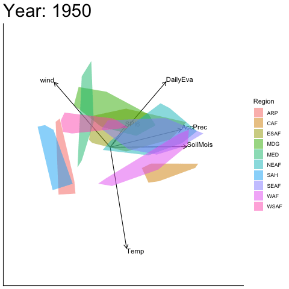
The animation reveals how the regional climate configurations shift relative to the fixed variable vectors across decades. Regions that move in the direction of a variable vector are increasing on that variable over time; regions moving against the vector are decreasing.
Dynamic Frame: moveplot2()
moveplot2() computes a separate PCA decomposition for
each time slice, allowing both sample positions and variable vectors to
evolve across levels. This provides a more faithful depiction of
time-varying variance–covariance structures but introduces a practical
complication: eigenvectors are determined only up to a sign change,
meaning that consecutive time slices may produce biplots that are
reflections of one another. This sign indeterminacy is mathematically
inconsequential but visually disruptive.
Two additional arguments address this:
-
align.time: a vector of time levels at which alignment should be applied. -
reflect: specifies the axis of reflection —"x","y", or"xy"— with each entry corresponding to a level inalign.time. Both arguments accept vectors when alignment is needed at multiple time levels.
Static faceted display (unaligned)
bp |> moveplot2(time.var = "Year", group.var = "Region",
hulls = TRUE, move = FALSE)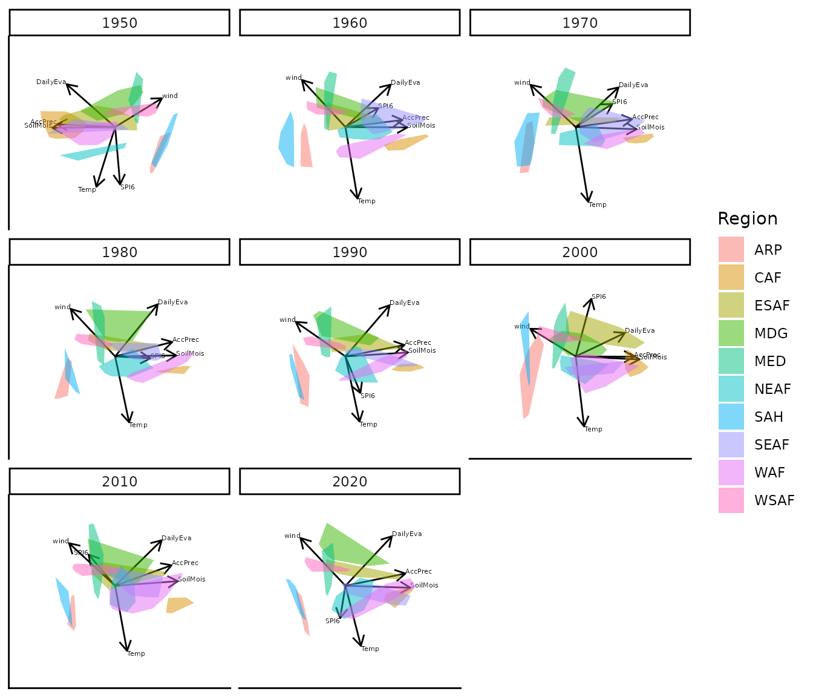
#> Object of class biplot, based on 960 samples and 9 variables.
#> 6 numeric variables.
#> 3 categorical variables.Note the discontinuity between 1950 and 1960 - the variable vectors and sample configuration are reflected about the x-axis. This is a sign indeterminacy artefact, not a genuine structural change.
Static faceted display (aligned)
bp |> moveplot2(time.var = "Year", group.var = "Region",
hulls = TRUE, move = FALSE,
align.time = "1950", reflect = "x")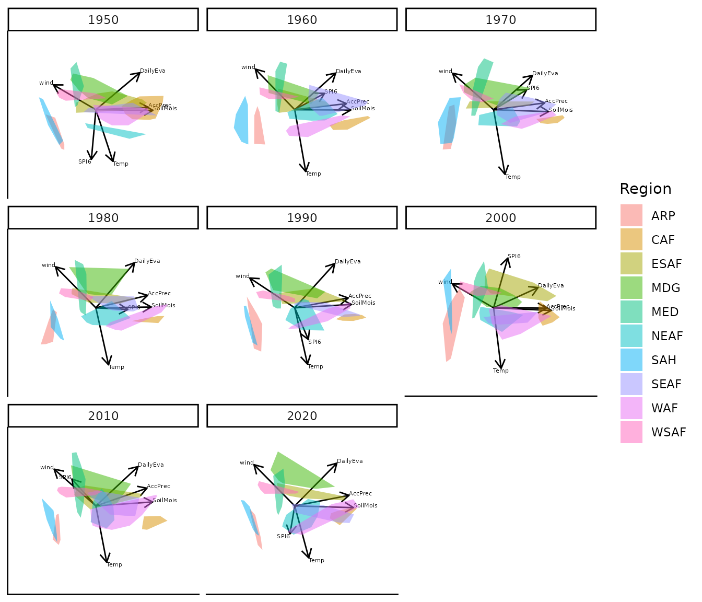
#> Object of class biplot, based on 960 samples and 9 variables.
#> 6 numeric variables.
#> 3 categorical variables.Applying a reflection about the x-axis at 1950 restores visual continuity across the sequence of biplots.
Automated Alignment: moveplot3()
moveplot3() automates the alignment of sequential
biplots using GPA (Gower and Dijksterhuis
2004), implemented via the GPAbin package (Nienkemper-Swanepoel et al. 2023). GPA
iteratively applies admissible transformations: translation, reflection,
rotation, and scaling, to minimise the sum of squared distances between
each time slice and a target configuration, without requiring the user
to manually identify discontinuities.
The target argument controls what the time slices are
aligned to:
-
target = NULL: aligns all time slices to their average (consensus) configuration. -
target = <dataset>: aligns all time slices to a user-supplied reference dataset containing measurements on the same variables.
The Africa_climate_target dataset included in
moveEZ provides 1989 measurements on the same variables as
Africa_climate, and is used here as an external
reference.
Consensus target (target = NULL)
Static faceted display
bp |> moveplot3(time.var = "Year", group.var = "Region",
hulls = TRUE, move = FALSE, target = NULL)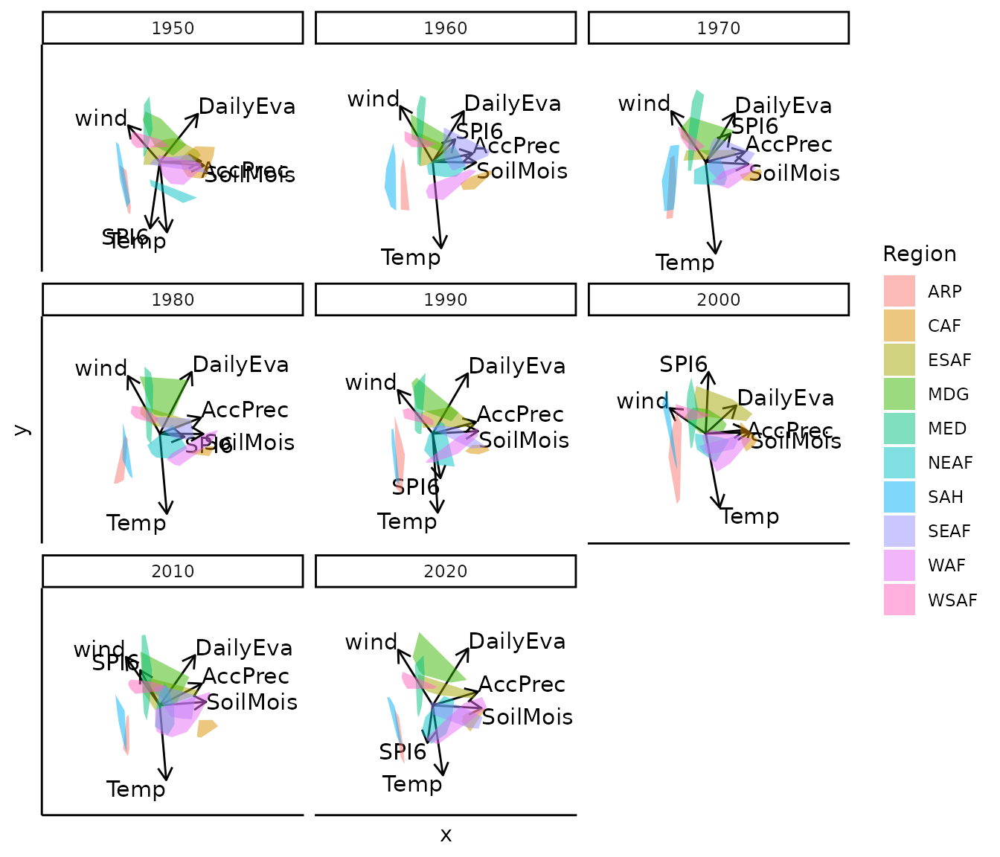
#> Object of class biplot, based on 960 samples and 9 variables.
#> 6 numeric variables.
#> 3 categorical variables.All time slices are aligned to the average configuration across years, producing a consistently oriented sequence of biplots without manual intervention.
User-supplied target
(target = Africa_climate_target)
data("Africa_climate_target")
tibble::tibble(Africa_climate_target)
#> # A tibble: 120 × 9
#> Year Month Region AccPrec DailyEva Temp SoilMois SPI6 wind
#> <fct> <chr> <chr> <dbl> <dbl> <dbl> <dbl> <dbl> <dbl>
#> 1 1989 January ARP 0.0740 -0.00416 14.9 1.11 -1.08 4.06
#> 2 1989 February ARP 0.235 -0.00161 17.3 1.55 -0.817 4.19
#> 3 1989 March ARP 0.815 -0.0220 21.5 2.70 0.00329 4.12
#> 4 1989 April ARP 0.495 0.0508 25.0 2.90 0.226 3.48
#> 5 1989 May ARP 0.0411 -0.0130 30.1 1.08 0.306 3.96
#> 6 1989 June ARP 0.0693 -0.0234 31.6 0.633 0.261 4.33
#> 7 1989 July ARP 0.0833 -0.0164 33.1 0.606 0.527 4.36
#> 8 1989 August ARP 0.137 -0.0209 32.6 0.685 0.575 4.05
#> 9 1989 September ARP 0.102 -0.0246 30.1 0.656 0.0360 3.56
#> 10 1989 October ARP 0.0330 -0.0549 26.5 0.449 -0.919 3.45
#> # ℹ 110 more rowsStatic faceted display
bp |> moveplot3(time.var = "Year", group.var = "Region",
hulls = TRUE, move = FALSE,
target = Africa_climate_target)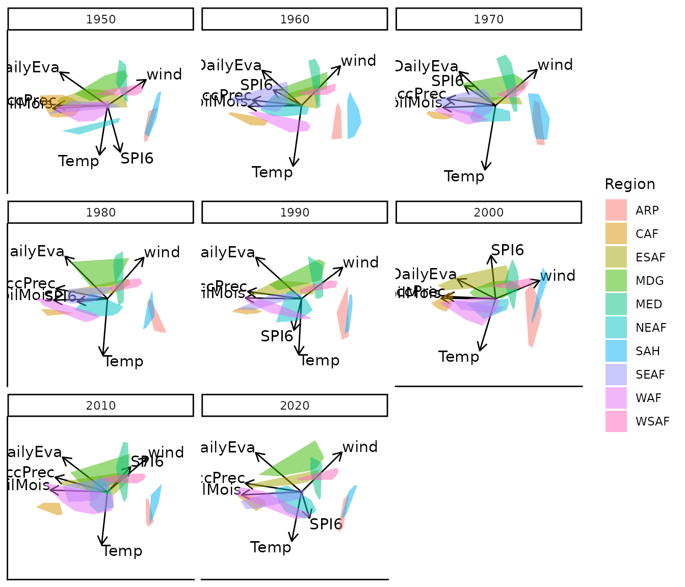
#> Object of class biplot, based on 960 samples and 9 variables.
#> 6 numeric variables.
#> 3 categorical variables.Each time slice is aligned to the 1989 reference configuration,
exposing the structural differences between 1989 and each decade from
1950 to 2020. Note that the target biplot itself is not shown in this
display, it serves only as the alignment reference. To visualise the
target configuration separately, pass it to moveplot()
directly:
viz_1989 <- Africa_climate_target |>
dplyr::mutate(
Target = as.factor(rep("1989", nrow(Africa_climate_target))),
Region = as.factor(Region)
)
bp_1989 <- biplot(viz_1989, scaled = TRUE) |>
PCA(group.aes = viz_1989$Region)
bp_1989 |> moveplot(time.var = "Target", group.var = "Region",
hulls = TRUE, move = FALSE)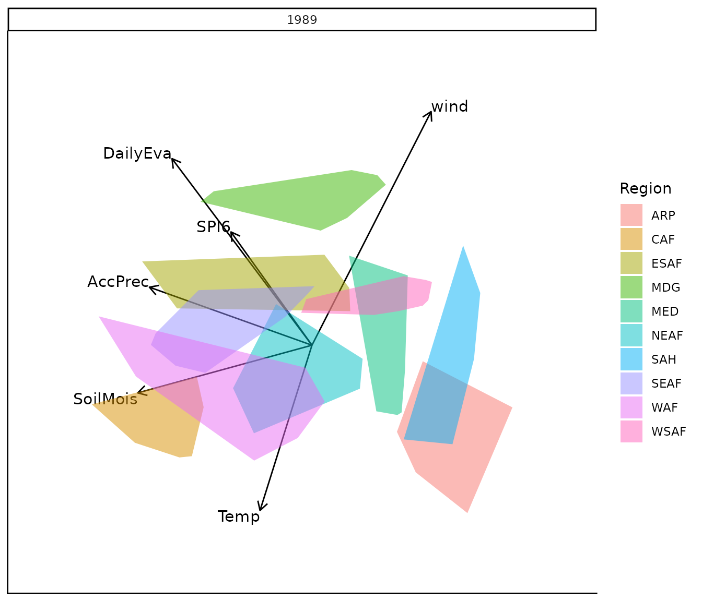
#> Object of class biplot, based on 120 samples and 10 variables.
#> 6 numeric variables.
#> 4 categorical variables.Evaluation
The evaluation() function quantifies the magnitude of
structural change between each time slice and the target configuration
specified in moveplot3(). It provides five measures based
on orthogonal Procrustes analysis, in two categories:
Fit measures (values closer to their optimal indicate better similarity):
- PS (Procrustes Statistic): optimal value is 0.
- CC (Congruence Coefficient): optimal value is 1.
Bias measures (lower values indicate less systematic distortion):
- AMB (Absolute Mean Bias)
- MB (Mean Bias): a value near zero indicates no systematic directional shift.
- RMSB (Root Mean Squared Bias)
results <- bp |>
moveplot3(time.var = "Year", group.var = "Region",
hulls = TRUE, move = FALSE, target = NULL) |>
evaluation()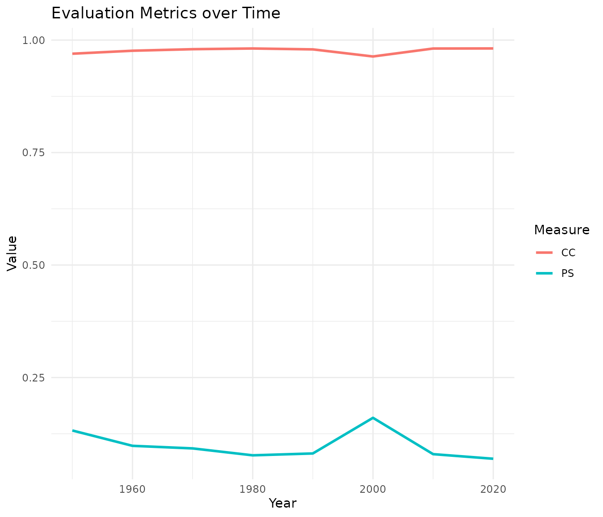
Numerical measures
results$eval.list
#> [[1]]
#> Target vs. 1950
#> PS 0.1323
#> CC 0.9697
#> AMB 1.2717
#> MB 0.0000
#> RMSB 1.8506
#>
#> [[2]]
#> Target vs. 1960
#> PS 0.0982
#> CC 0.9763
#> AMB 0.4414
#> MB 0.0000
#> RMSB 0.5779
#>
#> [[3]]
#> Target vs. 1970
#> PS 0.0925
#> CC 0.9798
#> AMB 0.4373
#> MB 0.0000
#> RMSB 0.5701
#>
#> [[4]]
#> Target vs. 1980
#> PS 0.0771
#> CC 0.9813
#> AMB 0.3903
#> MB 0.0000
#> RMSB 0.5501
#>
#> [[5]]
#> Target vs. 1990
#> PS 0.0812
#> CC 0.9793
#> AMB 0.4177
#> MB 0.0000
#> RMSB 0.5446
#>
#> [[6]]
#> Target vs. 2000
#> PS 0.1604
#> CC 0.9636
#> AMB 0.5263
#> MB 0.0000
#> RMSB 0.6564
#>
#> [[7]]
#> Target vs. 2010
#> PS 0.0797
#> CC 0.9813
#> AMB 0.4337
#> MB 0.0000
#> RMSB 0.5428
#>
#> [[8]]
#> Target vs. 2020
#> PS 0.0695
#> CC 0.9814
#> AMB 0.3914
#> MB 0.0000
#> RMSB 0.5069Fit measures over time
results$fit.plot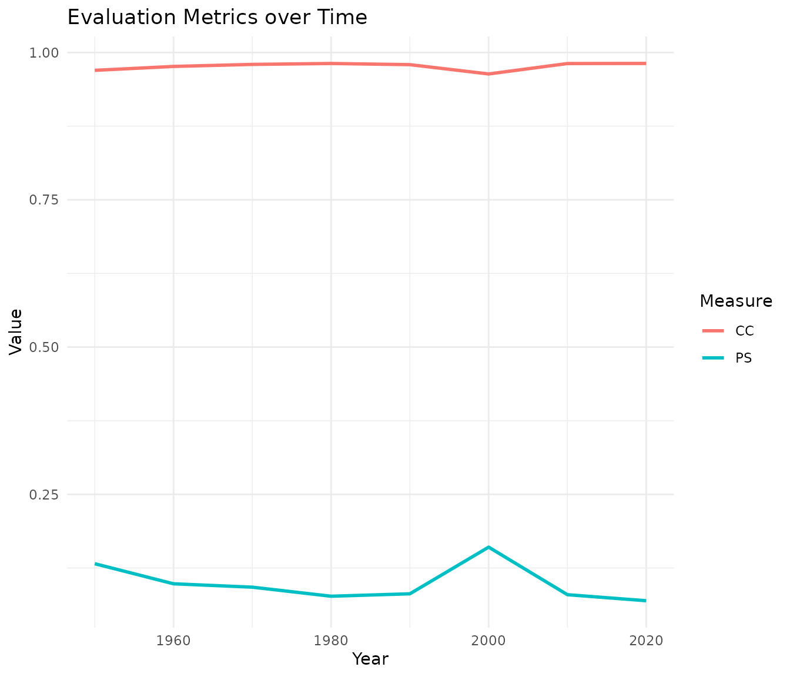
The biplot for 2000 shows a notably lower CC and higher PS relative to other years, indicating a structural departure from the consensus configuration that warrants closer investigation.
Bias measures over time
results$bias.plot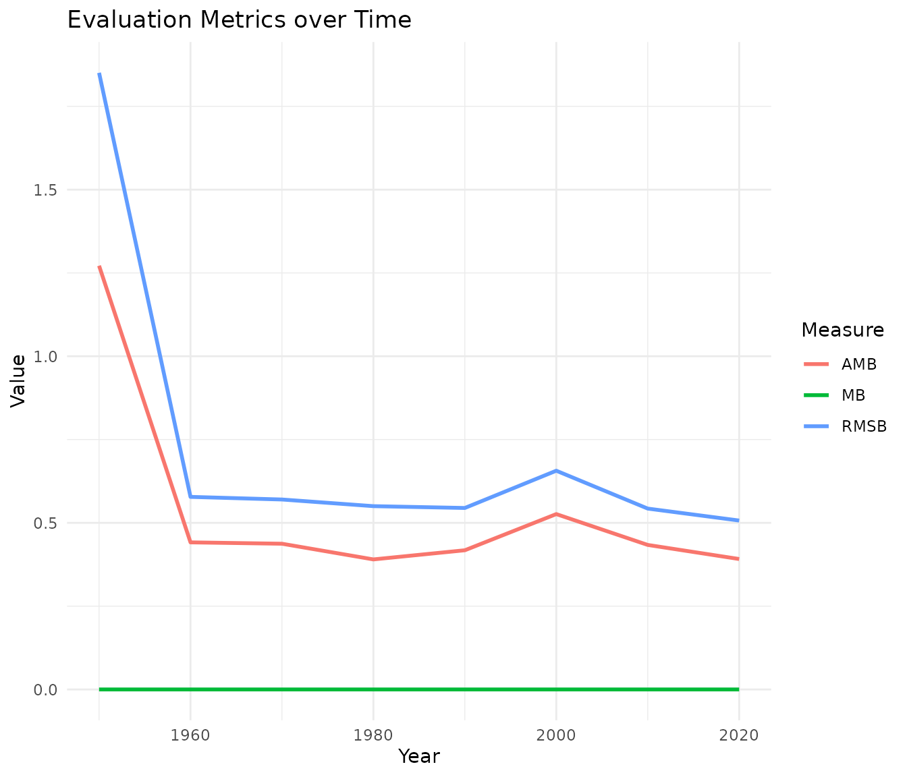
The initial bias at 1950 is high but decreases and stabilises from 1960, with an increase in AMB and RMSB at 2000 consistent with the fit measures. The MB remains close to zero throughout, confirming no systematic directional bias in the alignment.
Additional Examples
Alternative use of time.var
The group variable can be specified as the time variable to produce a faceted display in which each panel shows a single group rather than a single time level. This can be useful when group-level patterns are difficult to distinguish in the standard faceted display, where all groups appear together in each panel.
bp |> moveplot(time.var = "Region", group.var = "Region",
hulls = FALSE, move = FALSE)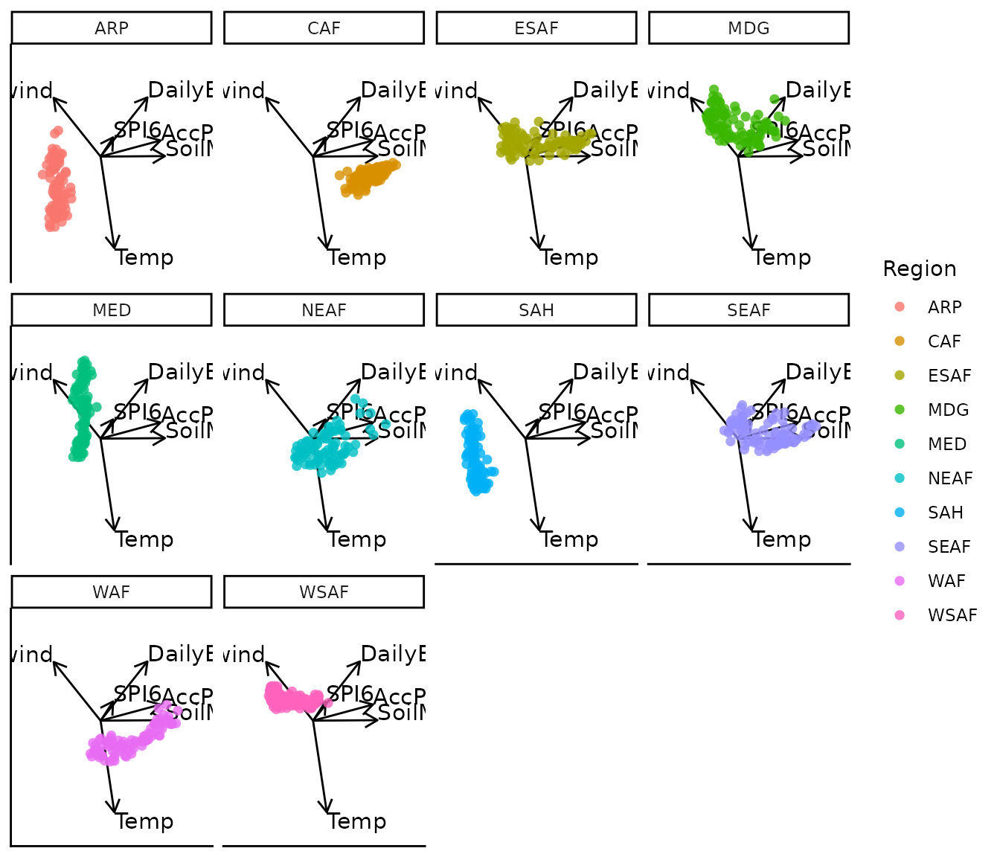
#> Object of class biplot, based on 960 samples and 9 variables.
#> 6 numeric variables.
#> 3 categorical variables.Customising aesthetics
moveEZ inherits its core biplot construction from
biplotEZ, and aesthetic customisation, such as point
colours, plotting characters, and axis label sizes — should be specified
in the biplotEZ biplot object before passing it to any
moveplot function. If no aesthetic changes are made to
biplotEZ::samples() or biplotEZ::axes(), the
default moveEZ aesthetics are applied automatically.
One important conversion to be aware of: biplotEZ uses R
base graphics sizing, while moveEZ renders using
ggplot2. Text size is therefore automatically rescaled —
for example, biplotEZ::axes(label.cex = 1) produces a
ggplot2 text size of 2
(i.e. geom_text(size = 2)). Adjust label.cex
accordingly to achieve the desired label size in the final
animation.
Custom colour palette and axis label size
bp_custom <- biplotEZ::biplot(Africa_climate, scaled = TRUE,
group.aes = Africa_climate$Region) |>
biplotEZ::PCA() |>
biplotEZ::samples(col = RColorBrewer::brewer.pal(10, "Paired")) |>
biplotEZ::axes(label.cex = 1.2)
bp_custom |> moveplot(time.var = "Year", group.var = "Region",
hulls = TRUE, move = FALSE)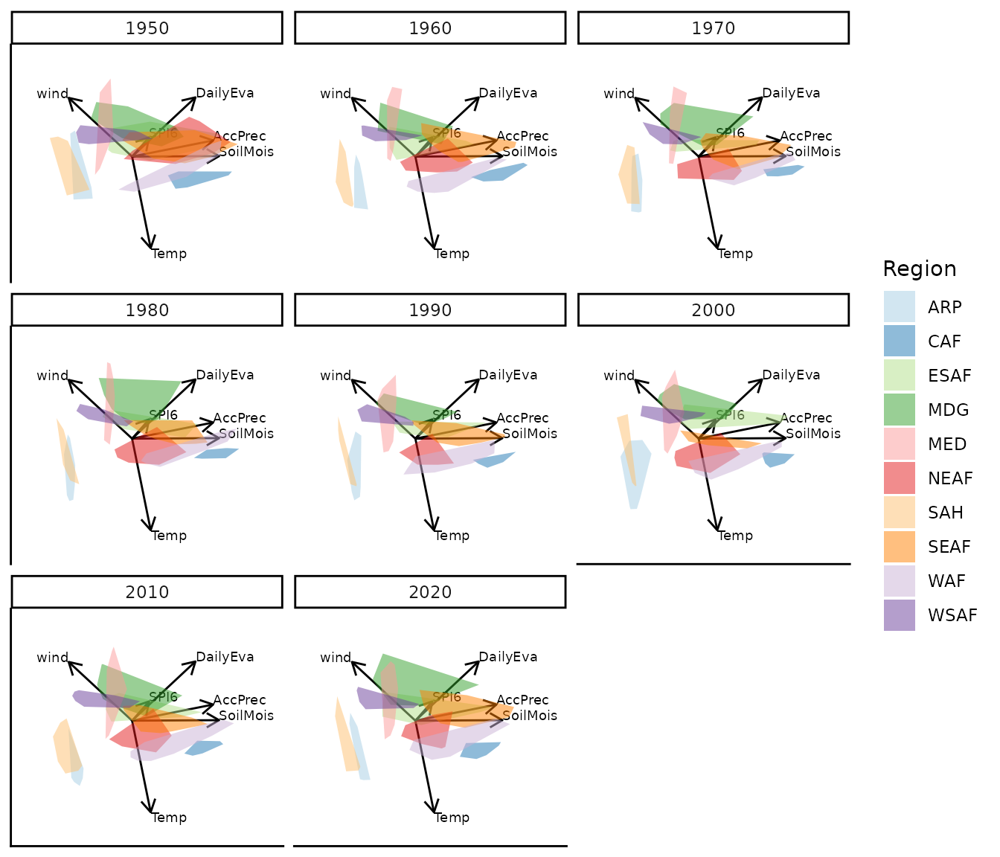
#> Object of class biplot, based on 960 samples and 9 variables.
#> 6 numeric variables.
#> 3 categorical variables.Custom plotting characters and opacity
bp_pch <- biplotEZ::biplot(Africa_climate, scaled = TRUE,
group.aes = Africa_climate$Region) |>
biplotEZ::PCA() |>
biplotEZ::samples(pch = c(22, 21, 24, 23), opacity = 0.4)
bp_pch |> moveplot(time.var = "Year", group.var = "Region",
hulls = FALSE, move = FALSE)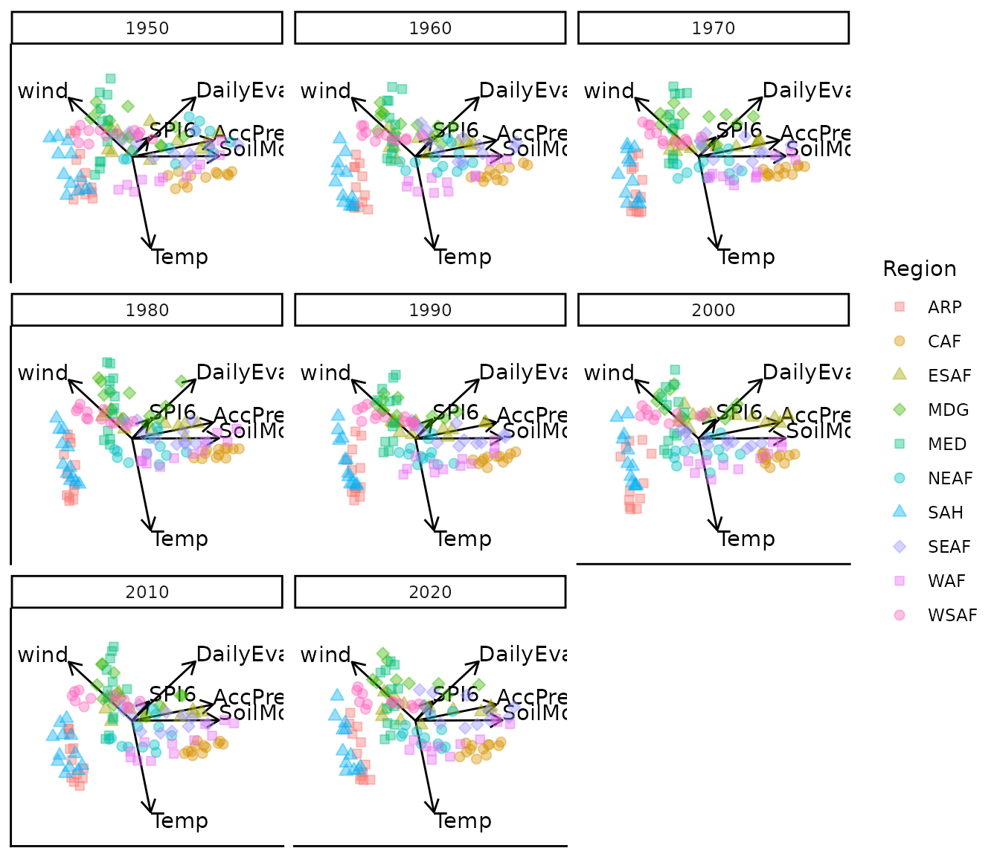
#> Object of class biplot, based on 960 samples and 9 variables.
#> 6 numeric variables.
#> 3 categorical variables.Note that pch values cycle across the ten region groups
- specify ten values to assign a unique character to each region.